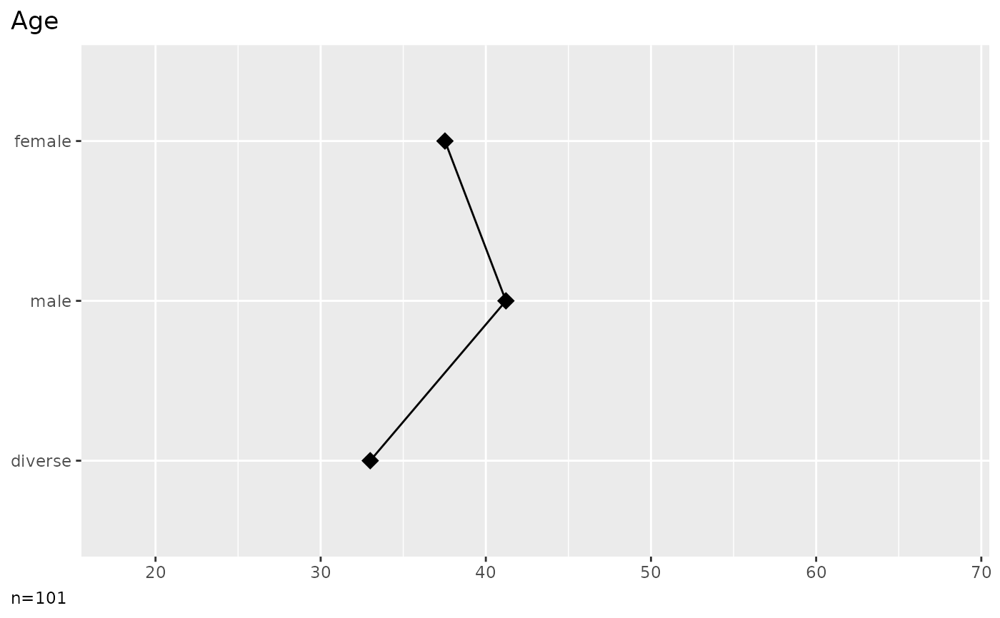

Printing method for volker lists
Usage
# S3 method for class 'vlkr_list'
print(x, ...)Examples
library(volker)
data <- volker::chatgpt
rp <- report_metrics(data, sd_age, sd_gender, effect = TRUE)
print(rp)

#>
#>
#> |Gender | min| q1| median| q3| max| mean| sd| n|
#> |:-------|---:|----:|------:|----:|---:|----:|----:|---:|
#> |female | 18| 25.8| 38.0| 44.2| 63| 37.5| 13.4| 40|
#> |male | 19| 32.5| 38.5| 52.0| 68| 41.2| 14.0| 60|
#> |diverse | 33| 33.0| 33.0| 33.0| 33| 33.0| | 1|
#> |total | 18| 27.0| 38.0| 52.0| 68| 39.7| 13.8| 101|
#>
#>
#> |Term | estimate| ci low| ci high| se| t| p| stars|
#> |:------------------|--------:|------:|-------:|-----:|-----:|-----:|-----:|
#> |(Intercept) | 37.52| 33.21| 41.84| 2.18| 17.24| 0.000| ***|
#> |female (Reference) | | | | | | | |
#> |male | 3.69| -1.88| 9.27| 2.81| 1.31| 0.192| |
#> |diverse | -4.53| -32.18| 23.13| 13.94| -0.32| 0.746| |
#>
#>
#> |Statistic | Value|
#> |:------------------|-----:|
#> |Adjusted R-squared | 0|
#> |F | 0.98|
#> |df | 2|
#> |residual df | 98|
#> |p | 0.38|
#> |stars | |